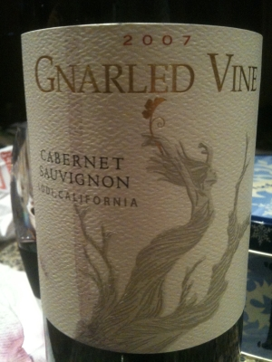

|
North America >
USA >
California >
Lodi >
Gnarled Vine >
Cabernet Sauvignon
2007 Cabernet Sauvignon
Lodi, California
Gnarled Vine
Lodi, California

Produced and bottled with a plastic cork by Oak Ridge Winery.
12.5% alcohol
750 ml

2009 tasting - This dark red has a tart bouquet coupled to a tart, light flavor and a tart aftertaste.
More about Cabernet Sauvignon.
|
|